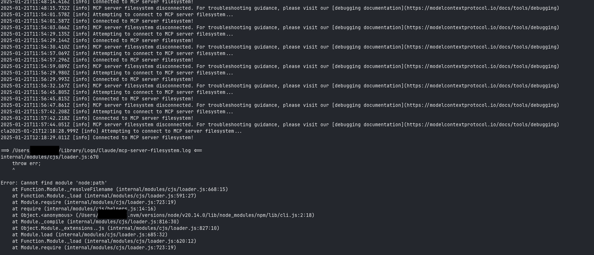
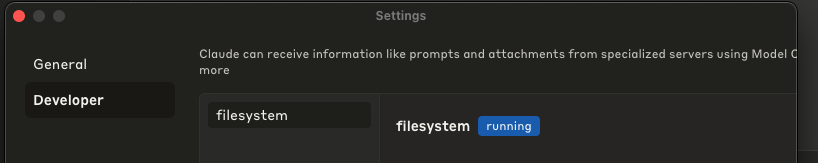
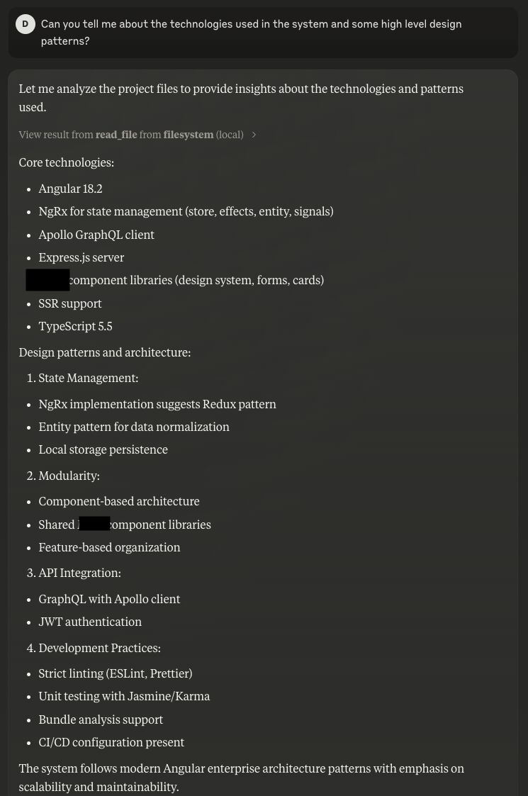
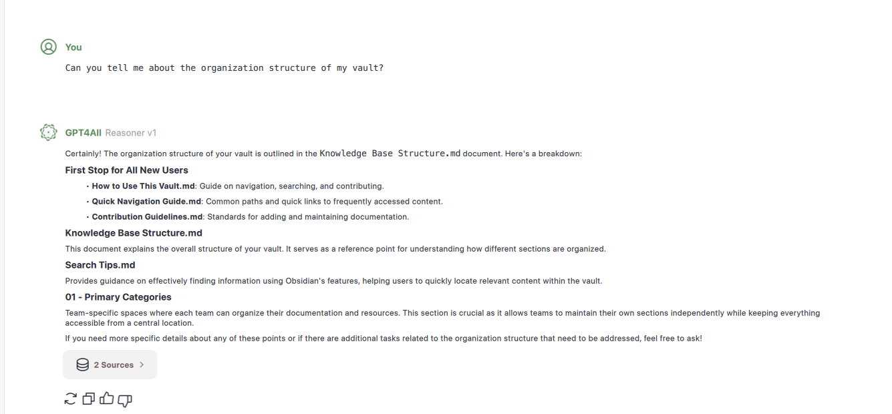

Two things that I have been using a lot lately are Claude AI and GPT4all. They are both great tools for developers and I highly recommend them. I want to highlight two sets of features that I have found particularly useful. Claude AI has recently released MCP which allows Claude to interact with external systems like a Google Drive or your local file system. The intention is to walk you through how to set that up easily and it's value, as it's not as simple as the tutorial dictates.
Secondly, we will take a look at GPT4all and how it can be used as a localized LLM, using the Reason Model for effectively interacting with your Second Brain method. This was particularly useful for me, as I've been hunting for an efficient LLM that doesn't impact my day to day activies, but is also fast enough to provide a smooth interaction. So let's get started.
Claude MCP: File System Integration
Model Context Protocol (MCP) is a new feature in Claude AI that enables integration with external systems like Google Drive or your local file system. This integration streamlines code reviews, enables project-wide analysis, and automates repetitive development tasks. The list of supported external systems is growing, but for all intents and purposes we will focus on the File System integration. This will allow us to read a local code repository, do code reviews, get project level awareness around code changes and refactors.
Base requirement: Claude Desktop installed.
Installing the Server File System
npm install @modelcontextprotocol/server-filesystem
Configure the Server File System
From within Claude Desktop, navigate to the Settings and add the following under the Developer configuration:
{
"mcpServers": {
"filesystem": {
"command": "/Users/<username>/.nvm/versions/node/v20.14.0/bin/node",
"args": [
"/Users/<username>/.nvm/versions/node/v20.14.0/lib/node_modules/@modelcontextprotocol/server-filesystem/dist/index.js",
"/Users/<username>/Sources/my-source-repo"
]
}
}
}
Unlike the official tutorial and documentation, the above configuration was sufficient to get the file system server running. In following the full tutorial, I found that the server would not start and the logs were not helpful. I spent a significant time fighting the configuration, and here were the errors I had following the official documentation. The resolution was to not depend on npx and to use the full path to the node binary.

Confirmation of Running MCP Server
Once your configuration has been applied, you can confirm that the server is running by checking the logs in the Claude Desktop or check the Settings->Developer.

Using the MCP Server
Upon restarting Claude Desktop, you should be able to start querying your local file system. Just a note, for every interaction or question, you will be prompted for access. This is a security feature to ensure that Claude is not accessing files without your permission.
Here is an example of a query and response from the MCP Server: 
Troubleshooting
For debugging and troubleshooting, you can use the following command:
tail -n 20 -F ~/Library/Logs/Claude/mcp*.log
GPT4all: Second Brain Interaction
GPT4all is a great tool for developers. It can be used as a localized LLM, using the Reason Model for effectively interacting with your Second Brain method. If you new to the concept of a second brain you can read more about it here. A second brain is a system that helps you capture, organize, and share your ideas and knowledge. I use it record problems solved, domain knowledge, common fixes and blog posts. Adding an AI layer to this system can help you generate new ideas, find connections between different pieces of information, and even write code.
Setting up GPT4all
You should be able to just follow the documentation on the GPT4all website to get started. The setup is pretty straightforward and you should be up and running in no time. The Reasoner v1 model is a modified version of Qwen Coder 7B that works with the GPT4All Reasoning System and as I mentioned, runs very smoothly on my MacBook Pro M2.
Adding your Obsidian Vault
You can add your vault using the LocalDocs functionality, which is as simple as a description and local directory path. The next step is just adding the Reasoner Model and you are good to go. Pending the size, there will be some load time for indexing, but it's insignificant.

By integrating AI through GPT4all, you can:
- Generate new insights from your existing notes
- Discover connections across your knowledge base
- Enhance your creative problem-solving process
- Access your knowledge base offline and securely
Hope this helps!